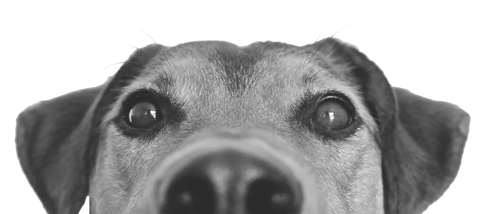

Patitas Solidarias

Adiestrar es enseñar y convencer, sin presiones, entendiendo la forma de comportarse de nuestro perro. En realidad, podríamos definir el adiestramiento canino como el conjunto de técnicas que facilita la convivencia entre el humano y el perro. ¿Por qué? Porque los humanos y los perros son dos especies con necesidades, características y naturalezas diferentes.